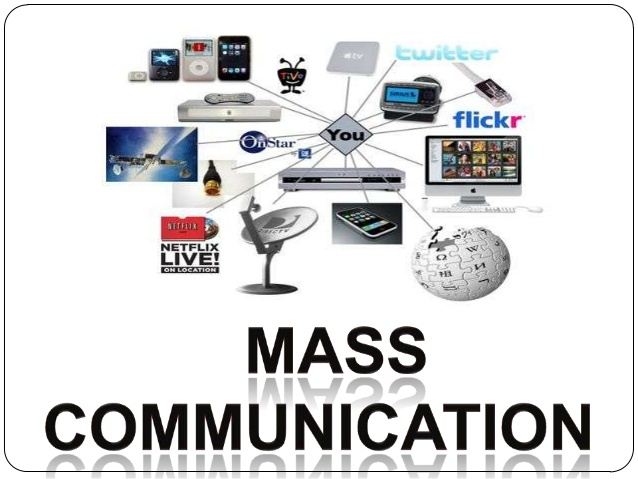

My College Diary
Home
Courses
Message
Faculity
Gallary
My College Courses
The Bachelor of Business Administration (BBA or B.B.A.) is a bachelor's degree in commerce and business administration.
The degree is conferred after three years of full-time study in one or more areas of business concentrations. The BBA program usually includes general business courses and advanced courses for specific concentrations.
Duration : 3 yrs (full time)
Eligibility : 10+2 with 50% marks in any stream.
Admission Procedure : Admission to BCA program will be made as per rules prescribed by the M.G. KashiVidyapeeth, Varanasi.

BCA is catering to the need of students aspiring to excel in the field of computers. This program is extended to six semesters each with the duration of six months. In this program, a student gets diversified knowledge on IT Management, Financial Accounting, Operational research, e-commerce e.t.c. In the six semesters each student is required to undertake a 'project' and work for a period of 4-6 weeks and submit a report after the completion of the project. This provides an opportunity to the student to tackle real- life problems.
Duration : 3 yrs (full time)
Eligibility : 10+2 with 50% marks in any stream.
Admission Procedure : Admission to BCA program will be made as per rules prescribed by the M.G. KashiVidyapeeth, Varanasi.
Basic knowledge of science develops critical, logical and analytical approach in students.
B.Sc. (BZC) - Botany, Zoology and Chemistry Combination.
B.Sc (PMC) - Physics, Mathematics and Chemistry Combination.
Duration : 3 yrs (full time)
Eligibility : 10+2 (with Bio Group or Math Group) from recognized board with 50% marks in aggregate.
Admission Procedure : Admission to B.Sc. (BZC/PMC) program will be made as per rules prescribed by the M.G. KashiVidyapeeth,Varanasi.
A Bachelor of Commerce, is an undergraduate degree in commerce. The degree is designed to provide the student with a wide range of managerial skills while at the same time building competence in a particular area. The curriculum thus focuses both on academic subjects, such as Statistics, Economics as well as practical subjects, such as Accountancy, Law, Management, Marketing, Finance etc.
Duration : 3 yrs (full time)
Eligibility : 10+2 (Commerce/Science with Maths/Humanities with Economics) with 50% marks
Admission Procedure : Admission to B.Com. program will be made as per rules prescribed by the M.G. KashiVidyapeeth, Varanasi.
Home economics, domestic science or home science is a field of study that deals withthe relationship between individuals, families, communities, and the environment in which they live.
Duration : 3 yrs (full time)
Eligibility : 10+2 with 50% marks in any stream.
Admission Procedure : Admission to BCA program will be made as per rules prescribed by the M.G. KashiVidyapeeth, Varanasi.

Mass communication is the study of how people exchange their information through mass media to large segments of the population at the same time with an amazing speed. In other words, mass communication refers to imparting and exchanging information on a large scale to a wide range of people. It is usually understood for relating newspaper, magazine, and book publishing, as well as radio, television and film, even via internet as these mediums are used for disseminating information, news and advertising.
Duration : 3 yrs (full time)
Eligibility : 10+2 with 50% marks in any stream.
Admission Procedure : Admission to BCA program will be made as per rules prescribed by the M.G. KashiVidyapeeth, Varanasi.
A Bachelor of Fine Arts (BFA, B.F.A.) is the standard undergraduate degree for students in the India seeking a professional education in the visual or performing arts or program in either the liberal arts, sciences, or both.
Duration : 4 yrs (full time)
Eligibility : 10+2 with 50% marks in any stream.
Admission Procedure : Admission to BCA program will be made as per rules prescribed by the M.G. KashiVidyapeeth, Varanasi.
.jpg)
A Bachelor of Education (B.Ed.) is a graduate professional degree which prepares students for work as a teacher in schools, though in some countries additional work must be done in order for the student to be fully qualified to teach.
Duration : 2 yrs (full time)
Eligibility : Successful completion of graduation in any of Bachelor of Arts (BA) or Bachelor of Science (B. Sc.) or Bachelor in Commerce (B. Com.) from a recognized university. A minimum aggregate score of 50% in graduation.
Admission Procedure : Admission to B.Ed. program will be made as per rules prescribed by the M.G. KashiVidyapeeth, Varanasi.

Basic Training Certificate is a two-year certificate level education course which is recognized by NCTE, Government of India. BTC is a mandatory training certificate required for those planning to teach in govt. primary schools. The main aim of the programme is training teachers for imparting primary education.
Duration:2 yrs (full time)
Eligibility : Successful completion of graduation in any of Bachelor of Arts (BA) or Bachelor of Science (B. Sc.) or Bachelor in Commerce (B. Com.) from a recognized university. A minimum aggregate score of 50% in graduation.
Admission Procedure : Admission to BTC program will be made as per rules prescribed by the M.G. KashiVidyapeeth, Varanasi.
The core courses in an MBA program cover various areas of business such as accounting, applied statistics, business communication, business ethics, business law, finance, managerial economics, management, entrepreneurship, marketing and operations in a manner most relevant to management analysis and strategy.
Duration:2 yrs (full time)
Eligibility : Successful completion of graduation in any of Bachelor of Arts (BA) or Bachelor of Science (B. Sc.) or Bachelor in Commerce (B. Com.) from a recognized university. A minimum aggregate score of 50% in graduation.
Admission Procedure : Admission to MBA program will be made as per rules prescribed by Uttar Pradesh Technical University (UPTU).

DESIGNED BY:
Abhay Yadav